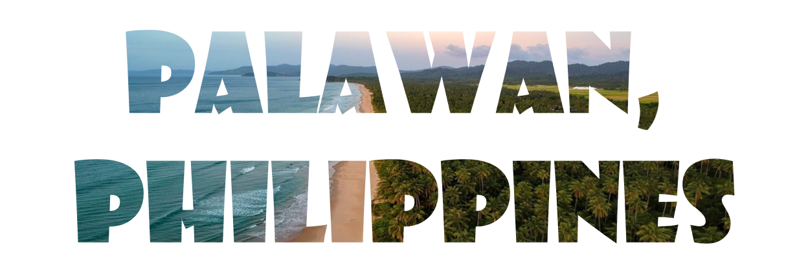
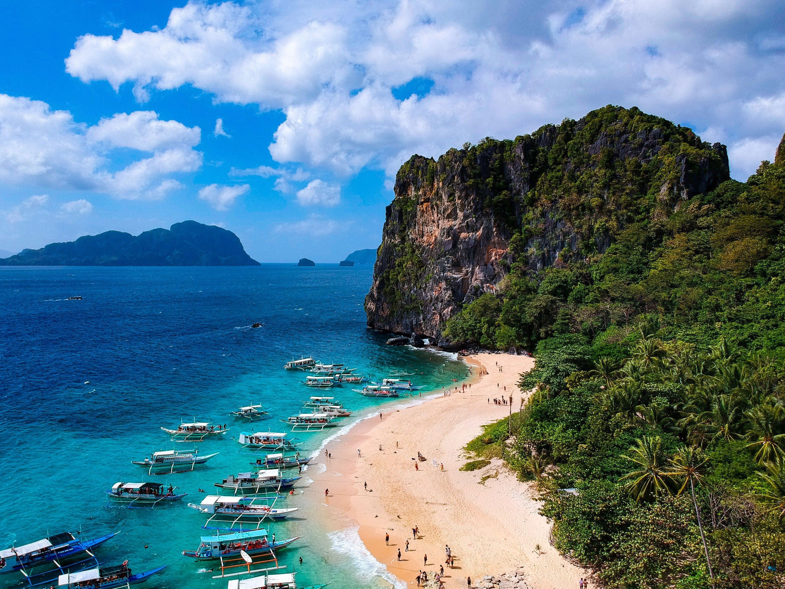
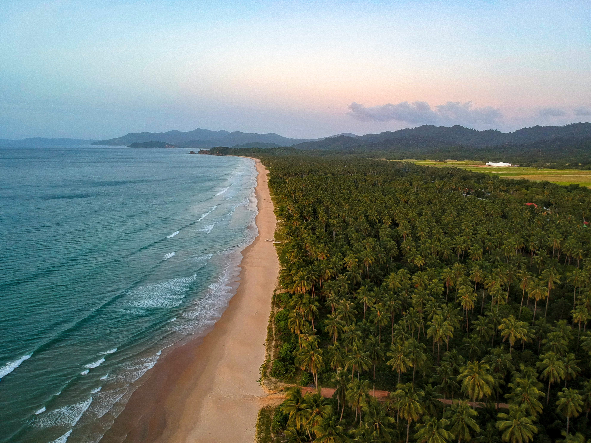
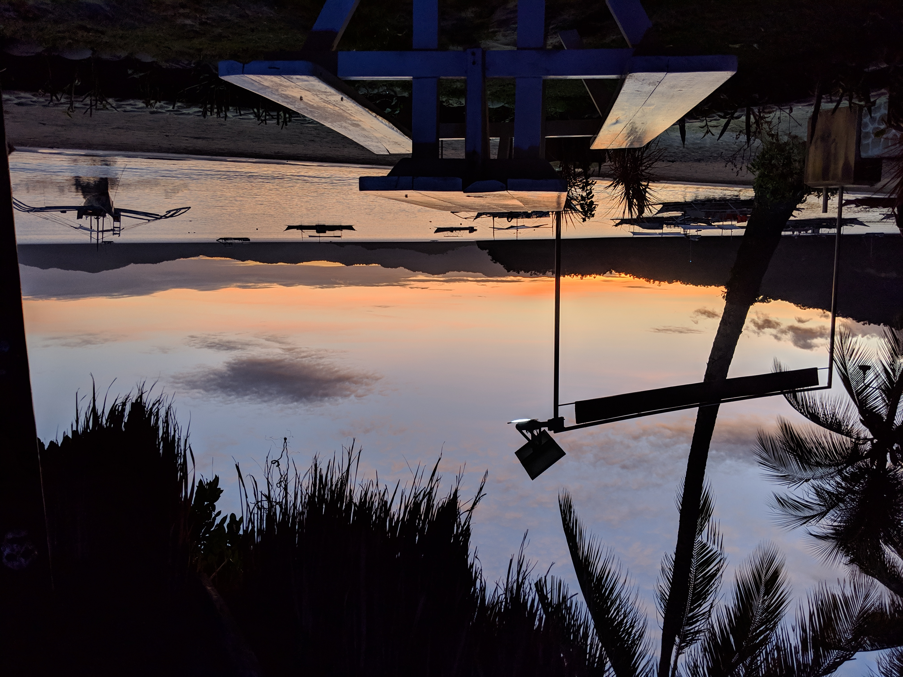

1. EL NIDO

Shimizu Island
Getting to El Nido
- Fly from Manila to San Vicente airport and take a 2-3 hour bumpy van ride to El Nido.
This is one of the best and cheapest way.
- Fly from Manila to Puerto Princesa and take a 5-hour bumpy van ride to El Nido.
This is the most common and cheapest way before San Vicente airport was build.
- Fly to El Nido from Manila. This is the shortest way but is very costly.
- Fly to Coron and take a boat ride to El Nido. There are few island hopping tours
that will take you on an adventure to various islands with El Nido as the final destination.
I recommend this for adventurous people as the tours will take care of your food and accomodations.
Tours will range from 5-15 days depending on tour packages. You can also take a day boat ride straight
to El Nido, but it will be costly.
Best Things To Do
- Island hopping with Snorkeling and Kayaking
- Scuba Diving
- Party Boat
The most popular thing to do is island hopping which consists of various activities such as kayaking,
snorkeling, and many more. You can rent a boat or be part of a tour group for cheaper price.
Price will usually range from 1000php to 1800php (27-48 CAD) for a day tour with 12-20 persons.
This will take you to few islands. Tour packages includes specific islands,
there are typically for tours: Tour A, Tour B, Tour C and Tour D.
If you want to visit specific islands, you must rent a boat,
which may cost you about 10000php (270cad) for a day.
2. CORON

 Twin Lagoon (left) | Malapascua Island (right)
Twin Lagoon (left) | Malapascua Island (right)
Getting to Coron
- Fly from Manila to Coron. This is the most common way.
- Take a ferry from Manila to Coron. Cheaper but it will take longer.
Best Things To Do
- Hike Mt.Tapyas and enjoy Maquinit Hotspring
- Water Activities such as Banana Boat, Kayaking and many more
- Island Hopping that includes Snorkeling
- Scuba Diving
Coron is also popular for island hopping with activities such as snorkeling and scuba diving.
As with El Nido, tour packages goes the same, it will take you to various little islands, or
snorkeling sight areas.
The most iconic attractions in Coron is
Kayangan Lake and
Twin Lagoon. The twin lagoon photo
above is the opposite direction. The twin lagoon is actually an area for swimming with no
boats allowed as it is sorrounded with rocks. The only way inside is to swim under the
opening ( about 15 seconds swim ) or to climb over the rocks with narrow stairs going
up and down the lagoon.
You can also explore the town,
Mt. Tapyas is one of the most iconic and popular hike in Coron.
Easy hike with a bunch of stairs. It is best enjoyed at sunrise or sunset. There is also a
hotspring called
Maquinit Hotspring, which is best enjoyed after the hike to Mt. Tapyas.
 Kayangan Lake
Kayangan Lake
3. SAN VICENTE

 Long Beach (left) | 1 of Port Barton Island Tour (right)
Long Beach (left) | 1 of Port Barton Island Tour (right)
Getting to San Vicente
- Fly from Manila to San Vicente. This is the most common way.
- Fly to Puerto Princesa and bumpy 3-4 hours van ride to San Vicente.
Best Things To Do
- Enjoy San Vicente's long beach
- Island hopping and Snorkeling
- Swim with Sea Turtles
- Visit Pamuayan Falls
One of the most popular places to visit in San Vicente is the town of
Port Barton.
This place is still emerging, best time to visit is now while most tourist does not know
this place yet. There is only a few tour packages, but the islands where so serene, clear
and relaxing. Snorkeling areas have large turtles as well! Most tourists here are foreigners,
only very few Filipino tourists. Local are so welcoming, with variety of accomodations and
food choices despite not being well-knowned tourist destination (yet).
You can also explore the town by renting scooter bikes, you can visit the Pamuayan Waterfalls.
It is also sorrounded by beaches, so if you don't want to spend on tour packages,
you can visit most of the beaches sorrounding the area by scooter bikes.
4. PUERTO PRINCESA

Getting to Puerto Princesa
- Fly from Manila to Puerto Princesa, the most common and cheapest way.
- Take a ferry from Manila to Puerto Princesa (cheaper but longer)
Best Things To Do
- Visit the Underground River
- Zipline and ATV ride
- Visit the Puerto Princesa Baywalk
- Dolphin Watching
Puerto Princesa is popular for its underground river.
Subterranean River National Park, A UNESCO World Heritage Site, attracts most tourists.
Its town is very urbanized among all four locations listed in the site.
Night life is also decent, with variety of clubs, bars and late night shopping areas.
For adventurous people, there are a lot of activities here such as
ziplining, rock climbing,
ATV ride, Aquapark and much more.